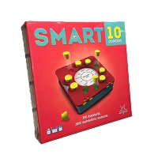
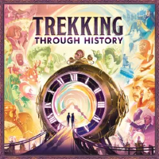

MEITÄ KIINNOSTAVAT PELIT
SMART10 JUNIOR
On uuden suositun tietopelin junioriversio, joka on suunnattu ala-asteikäisille pelaajille. Pelissä ei tarvitse odotella pitkään omaa vuoroaan. Jokaiseen kysymykseen on 10 vastausvaihtoehtoa, ja kaikki pääsevät vastaamaan jokaiseen kysymykseen. Jokaisesta oikeasta vastauksesta saa vastausmerkin, ja kierroksen lopulla niistä merkitään jokaiselle pisteet.

TREKKING THROUGH HISTORY
Kotimaisen Pelaajien Valinta -raadin voittaja vuonna 2024.
1-4 pelaajaa keräävät erilaisia kokemuksia matkustamalla ajassa eri tapahtumiin. Pelin lopussa palkitaan myös pisimmät aikajärjestyksessä edenneet aikamatkat.
